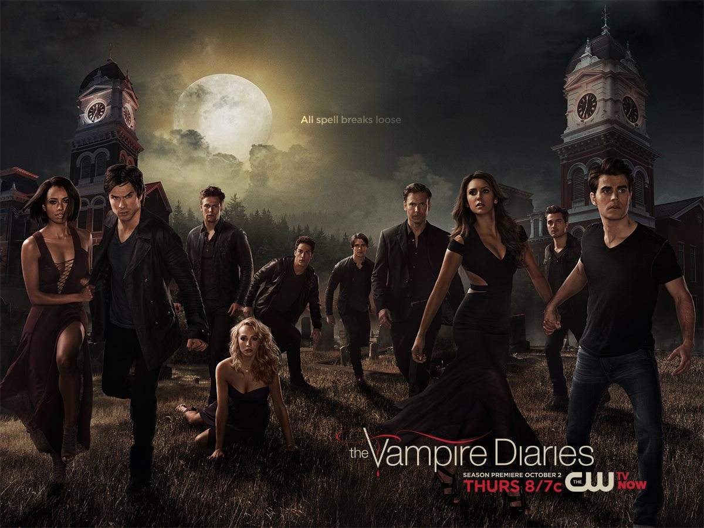

- Ian Somerhalder, que da vida a nuestro querido Damon, empezó a mostrarse antes que en las pantallas en el mundo de la moda,
como modelo, apareciendo en pasarelas internacionales como Milán, Londres o Nueva York, cosa que por supuesto a ninguno nos
extraña,pues su físico es increíble. Además, ha aparecido en series que seguramente a todos nos suenan, como ‘Smallville’,
‘CSI’, o ‘Perdidos’.
- Todos los episodios de la sexta temporada llevan nombres de canciones de los 90’s, salvo «bird in a guilded cage», de 1903.
Creemos que tienen buen gusto.
- Se consideró contratar a Selena Gómez para el papel de Elena Gilbert y Ahsley Tisdale recibió un ofrecimiento de actuar como
Caroline, que rechazó. Nos guste o no, no podemos negar que hay cierto parecido entre ellas y las actrices finalmente escogidas.
- Zach Roerig (Matt), Michael Trevino (Tyler) y Paul Wesley (Stefan) se presentaron candidatos para interpretar a Damon,
obteniendo después sus otros papeles ya conocidos.
- El actor que da vida a Stefan no quiere que se le compare con Robert Pattinson, el actor de la saga Crepúsculo. Como dijo:
“Robert Pattinson es la última persona con la que quiero que se me compare”. “Creo que cualquier chica me lanzaría debajo
de un autobús para estar cerca de Robert Pattinson. Me parece un tío atractivo. He visto Crepúsculo y me resulta realmente
intrigante”, aseguró. ¿Así que nuestro Stefan cree que quedaría eclipsado por Edward?
- La serie está basada en los libros de la escritora Lisa Jane Smith, que cuentan la historia de una adolescente, cuyo amor
está dividido entre dos jóvenes vampiros. En 2011, la productora despidió a la autora porque no seguía el hilo de la historia
para ser adaptada a televisión y la sustituyó con un escritor fantasma, pero el nombre de L.J. Smith sigue apareciendo y
recibe el 50% de las ganancias.
- En redes sociales, Nina tiene más de 5.4 millones de seguidores en Twitter, más de 4.7 millones de fans en Instagram y 4.9
millones de likes en Facebook. Parece que nuestra protagonista no solo arrasa en la serie.
- Ian Somerhalder no consiguió su papel a la primera, sino que se presentó dos veces como candidato antes de conseguirlo.
¡Con lo bien que le queda el personaje!
- En el año 2014 se dio a conocer que Nina sufrió el ataque de un hacker, filtrando alrededor de 140 fotos privadas, y aunque
eran sensuales, en ninguna aparecía desnuda.
- En la vida real, Nina Dobrev (Elena) es 6 meses menor que Steven (Jeremy).
- Aunque suene de lo más extraño, Paul Wesley (Stefan) cree en los fantasmas,ya que asegura haber tenido encuentros con algunos e
incluso haberles hablado. Por si os lo preguntáis, no cree en vampiros, pero no oculta que le atrae mucho lo sobrenatural. ¡Sorprendente!